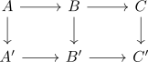

pasting law for tor-independence for rings
Proposition
Lte

be a commutative diagram of commutative rings Suppose that the left square is a tor independent square of rings
TFAE:
- the outer square is tor independent
- the right square is tor independent
Proof
Observe that being a tor independent square is actually a pushout condition in $\mathrm{CAlg}(\mathcal{D}(\mathbb{Z}))$. Here one half follows from glueing lemma for infinity pushouts / pasting lemma for infinity pushouts.
If $A',B$ are tor independent, then $B'$ is discrete. Therefore $C'$ is - by definition of tor independence - discrete if and only if $B'$ and $C$ are tor independent and similarly if and only if $A'$ and $C$ are tor independent.